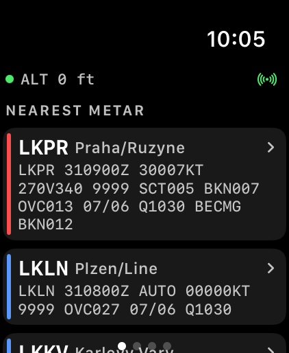
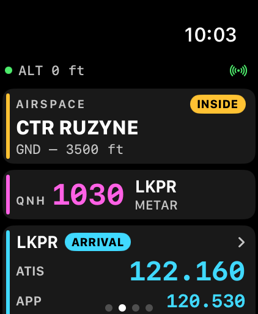
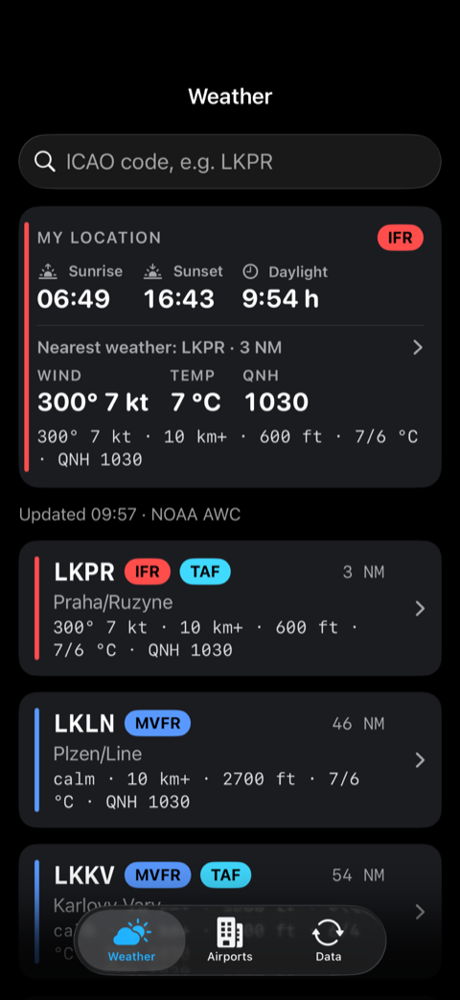
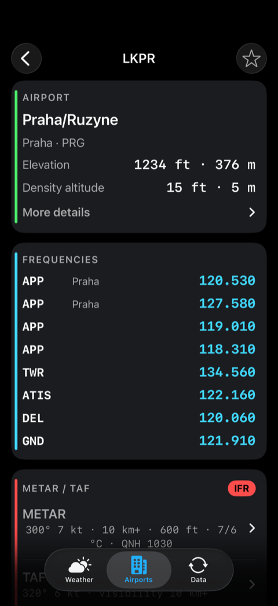
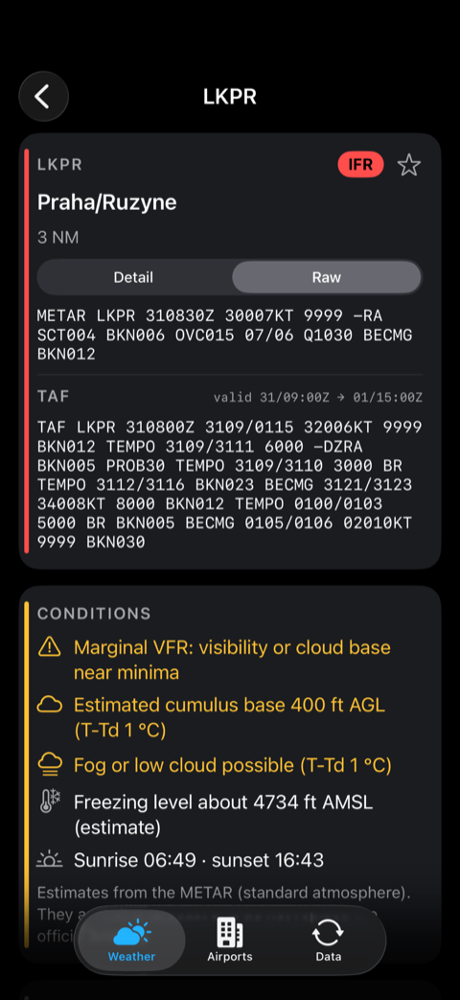
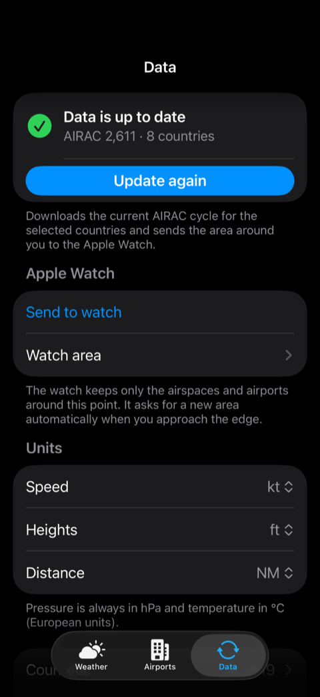

A pilot's helper on your wrist. Airspace alerts, altimeter hints, nearest airports and weather for VFR flying in Europe, on Apple Watch and iPhone. Česky níže
Important: This app is an orientation aid only. It is not certified aviation equipment and not a navigation instrument.
The official sources are the AIP, NOTAM and the flight information service. Aeronautical data is community-maintained
(Open Flightmaps) and may be incomplete or outdated. Always check before flight.
What is it for?
In the cockpit you often need a small piece of information fast: Am I about to enter a controlled zone? What QNH should I set? Where is the nearest airport if something goes wrong? How long have I been flying?
VFR Pilot Watch answers these questions at a glance on your Apple Watch, without taking out a phone or tablet.
The iPhone is the companion: it reads METAR and TAF, searches airports and keeps the data up to date.
Why it is useful for pilots
Airspace alerts in flight. The watch warns you with haptics before you enter CTR, TMA, ATZ, RMZ, prohibited, restricted and danger areas, TRA/TSA and FIS sectors, filtered by your altitude. You see the next entry and the time to it.
Altimeter helper. QNH from the nearest METAR, transition altitude and level (TA / TL) and an automatic hint to switch to STD.
Emergency list. One tap shows the nearest airports with direction arrow, distance, runway length and frequency.
Flight time. Takeoff and landing are detected automatically. Flight time and last flight are also available as watch face complications.
Weather you can read. METAR and TAF with decoded hazards, cloud base, fog risk and trends. Wind components for each runway.
Works offline. Built-in data for Czech Republic, Austria, Germany, Poland and Slovakia. Up to 19 European countries can be downloaded.
Private. No account, no ads, no tracking. Your position stays on your device.
Apple Watch
Swipe left and right between the pages. Scroll with the Digital Crown.

Weather Nearest METAR reports.

Situation Airspace, entry time, QNH, nearest airport.
Situation page: the airspace you are in or about to enter, QNH with its source, and the nearest airport with frequencies. The red Emergency button at the bottom opens the emergency list.
Flight page: altitude with QNH chip and TA / TL, ground speed and track, flight time. Use Start flight / End flight if the automatic detection does not catch your takeoff or landing.
Run in background: the icon in the top bar (the radio waves symbol) keeps the app running with the screen off, so alerts work during the flight. Tap it to switch off and save battery (the moon symbol). It also stops by itself a few minutes after landing.
Alerts: alerts and haptics are active only in flight. On the ground you only see the information.
Complications: add Flight time and QNH to your watch face. During a flight the time is green and running, afterwards it shows the last flight in grey.
iPhone

Weather METAR for stations around you.

Airports Search, runways, frequencies, METAR.

METAR / TAF Raw and decoded, conditions.

Data Updates, watch area, units.
Weather tab: your location with sunrise and sunset, and the nearest METAR stations. Search any ICAO code, tap a station for detail, add favorites with the star.
Airports tab: search by name or ICAO. Runways with headwind and crosswind components, frequencies, elevation and density altitude, METAR and TAF, contacts.
Data tab:Update data downloads the current AIRAC cycle for the countries you selected. Send to watch sends the airspace and airports around you (or around a chosen airport) to the watch. Also set units, language and countries here.
Quick start
Install the app on your iPhone. The watch app installs on your Apple Watch automatically.
Open the app on the watch once and allow location access. Accept the notice that it is an orientation aid.
On the iPhone open the Data tab, choose your countries and tap Update data, then Send to watch.
Before the flight, check the QNH on the Situation page and the weather on the first page.
Start the app before takeoff. It runs in the background and alerts you in flight.
Česky
K čemu to je
V kabině často potřebujete rychle malou informaci: Blížím se k řízenému prostoru? Jaké QNH mám nastavit? Kde je nejbližší letiště, kdyby se něco stalo? Jak dlouho letím?
VFR Pilot Watch odpovídá na tyto otázky jedním pohledem na Apple Watch, bez vytahování telefonu nebo tabletu.
iPhone je pomocník: čte METAR a TAF, hledá letiště a udržuje data aktuální.
Proč je to užitečné pro piloty
Varování před prostory za letu. Hodinky vás haptikou upozorní před vstupem do CTR, TMA, ATZ, RMZ, zakázaných, omezených a nebezpečných prostorů, TRA/TSA a sektorů FIS, filtrovaných podle vaší výšky. Vidíte další vstup a čas do něj.
Pomocník výškoměru. QNH z nejbližšího METARu, přechodová výška a hladina (TA / TL) a upozornění na přepnutí na STD.
Nouzový seznam. Jedním klepnutím nejbližší letiště se šipkou směru, vzdáleností, délkou dráhy a frekvencí.
Čas letu. Vzlet a přistání se poznají automaticky. Čas letu a poslední let jsou i jako komplikace na ciferníku.
Čitelné počasí. METAR a TAF s rozluštěnými riziky, základnou oblačnosti, rizikem mlhy a trendem. Složky větru pro každou dráhu.
Funguje offline. Vestavěná data pro Česko, Rakousko, Německo, Polsko a Slovensko. Lze stáhnout až 19 evropských zemí.
Soukromí. Bez účtu, reklam a sledování. Vaše poloha zůstává v zařízení.
Ovládání hodinek
Mezi stránkami přejíždějte prstem doleva a doprava, listovat lze korunkou.
Situace: prostor, ve kterém jste nebo do kterého vstupujete, QNH se zdrojem a nejbližší letiště s frekvencemi. Červené tlačítko Nouze dole otevře nouzový seznam.
Let: výška s QNH a TA / TL, rychlost a kurz, čas letu. Tlačítkem Start flight / End flight upravíte let ručně, když automatika vzlet nebo přistání nepozná.
Běh na pozadí: ikona v horní liště drží aplikaci spuštěnou i se zhasnutým displejem, aby fungovala varování. Klepnutím ji vypnete a šetříte baterii (symbol měsíce). Několik minut po přistání se vypne sama.
Varování: upozornění a haptika fungují jen za letu. Na zemi vidíte jen informace.
Komplikace: přidejte na ciferník Čas letu a QNH. Za letu je čas zelený a běží, po přistání ukazuje šedě poslední let.
Ovládání iPhonu
Počasí: vaše poloha s východem a západem slunce a nejbližší stanice METAR. Hledejte libovolný kód ICAO, klepnutím otevřete detail, hvězdičkou přidáte oblíbené.
Letiště: hledání podle názvu nebo ICAO. Dráhy se složkami čelního a bočního větru, frekvence, výška a hustotní výška, METAR a TAF, kontakty.
Data:Update data stáhne aktuální cyklus AIRAC pro vybrané země. Send to watch pošle prostory a letiště kolem vás (nebo vybraného letiště) do hodinek. Tady také nastavíte jednotky, jazyk a země.
Rychlý start
Nainstalujte aplikaci do iPhonu. Aplikace pro hodinky se do Apple Watch nainstaluje sama.
Otevřete aplikaci na hodinkách a povolte polohu. Potvrďte upozornění, že jde o orientační pomůcku.
Na iPhonu otevřete záložku Data, vyberte země, klepněte na Update data a pak na Send to watch.
Před letem zkontrolujte QNH na stránce Situace a počasí na první stránce.
Spusťte aplikaci před vzletem. Běží na pozadí a za letu vás upozorní.